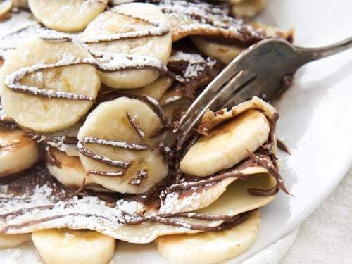

<div id="crepesStyle">

    <div>

        <h1>Banana Nuttela Crepes</h1>

        

        <h3>Servings: 18</h3>

        <h3>Preparation: 20 minuetes</h3>

        <h3>Cook Time: 5 minutes</h3>

        <h4>Difficulty: Simple</h4>

    </div>

    <h3>Ingredients</h3>

    <button id="showIngredients">Show Ingredients</button>
    <button id="hideIngredients">Hide Ingredients</button><br>

    <input type="radio" name="radio" id="halfRecipe"> Half the Recipe

    <input type="radio" name="radio" id="defaultRecipe">Default Recipe

    <input type="radio" name="radio" id="doubleRecipe">Double the Recipe

    <div id="crepesIngredients">
        <h4>Crepes</h4>
        <ul id="crepes">

            <li> <span>1</span>  cup all-purpose flour</li>
            <li> <span>1</span> Pinch salt</li>
            <li> <span>1</span>  egg</li>
            <li> <span>1</span>  egg yolk</li>
            <li> <span>2</span>  cups milk</li>
            <li> <span>1</span>  tablespoon melted butter</li>
            <li> <span>0.5</span>   teaspoon vanilla extract</li>
            
        </ul>

        <h4>Filling</h4>

        <ul id="filling">

            <li> <span>1</span>  jar hazelnut chocolate spread</li>
            <li> <span>5</span>  bananas, sliced</li>
            <li> <span>1</span>  can whipping cream</li>
            
        </ul>
    </div>

    <h3>Instructions</h3>

    <button id="showBreakfast">Show Instructions</button>
    <button id="hideBreakfast">Hide Instructions</button>

    <ol id="breakfastInstructions">
        <li>Sift the flour with the salt into a bowl.</li>
        <li>Make a well in the center and add the egg and egg yolk.</li>
        <li>Pour in the milk, slowly, stirring constantly and, when half is added, stir in the melted butter and vanilla.</li>
        <li>Beat well until smooth.</li>
        <li>Add the remaining milk, cover and let stand at room temperature for at least 20 minutes before using.</li>
        <li>The batter should be the consistency of light cream.</li>
        <li>Heat a well greased 6-inch skillet.</li>
        <li>Add 1/4 cup batter.</li>
        <li>Tip skillet from side to side until batter covers bottom.</li>
        <li>Cook until the bottom is golden brown, turn and remove to a plate.</li>
        <li>Repeat with remaining batter.</li>
        <li>Spread a thin layer of chocolate hazelnut spread onto crepe and place banana slices down the center.</li>
        <li>Roll or fold crepe.</li>
        <li>Just before serving top with whipped cream.</li>
    </ol>

</div>             